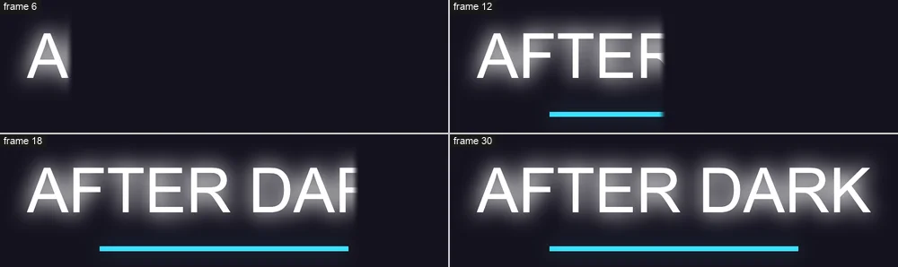

Tutorials
Glow and wipes
Make a title glow with an adjustment layer, then wipe it on with a keyed Linear Wipe.
This page is also a lesson inside Phoenix: choose and start Glow and wipes, and Phoenix points at each control as you go. It takes about 8 minutes.
To follow along here instead, download the starting document, glow-and-wipes.fla, and open it with .

An adjustment layer changes everything below it, and it can hold many effects: glows, wipes, color, blurs. Each one's settings can be keyed, so they change over time.
The Title layer holds a white title with a blue line under it.
1. Add a layer
Click the Title layer's name, then click the New Layer button under the layers, or choose Insert > Timeline > Layer. The new layer goes above it.
2. Make it an adjustment layer
Right-click the new layer's name and choose Adjustment Layer. Everything below it blurs: a new adjustment layer starts with a Blur.
3. Take the blur away
Click an empty part of the stage so nothing is selected. The Behaviors panel shows the layer's effects. With Blur picked in its list, click Remove.
4. Add a glow
Click Add Effect and choose Glow. The bright parts of the picture, the white letters and the blue line, spread their light around them.
5. Make it brighter
Set Radius (pixels) to 24 and Intensity (percent) to 150 for a bigger, stronger glow.
Threshold says how bright a part must be to glow; Glow color tints the light, such as #38D8FF for neon.
6. Add a wipe
Click Add Effect again and choose Linear Wipe. It wipes the picture away behind a moving edge.
7. Wipe from the left
Set Direction (degrees) to 180. The wipe now runs the other way, so the title will be uncovered from its left, the way it reads.
8. Key it wiped away
The playhead is on frame 1. Set Completion (percent) to 100: the title is wiped away. Then click the diamond beside it to key it on this frame.
9. Go to frame 24
Click 24 in the frame numbers above the layers.
10. Uncover it
Set Completion (percent) to 0. Since the setting is keyed, this makes a second key here.
11. Play it
Press Enter, or click the play button in the timeline header. The glowing title is wiped on from the left, with a soft edge.
What you did
You made a title glow and wiped it on with keyed effects on an adjustment layer. Effects apply in the order of the list: the wipe here wipes the glow too.
Try Radial Wipe or Venetian Blinds in place of the Linear Wipe, and Feather for a softer or harder edge.
For everything this tutorial touches on, see Behaviors.